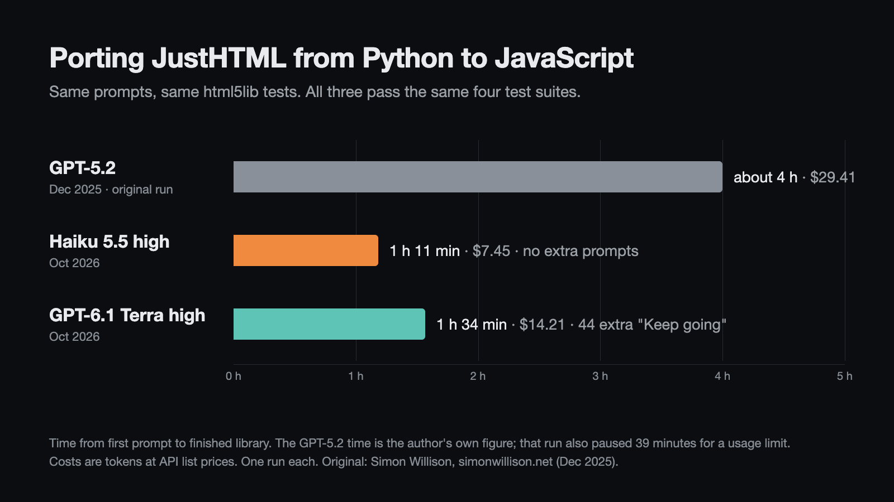
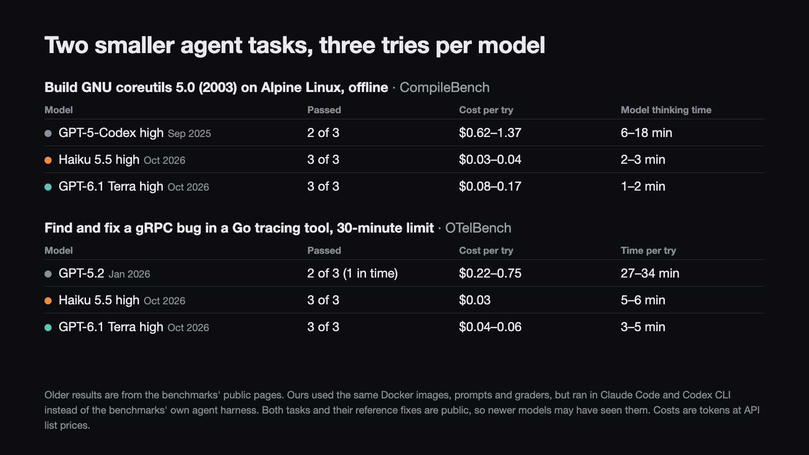

GPT-5-era agent tasks, rerun on Haiku 5.5 and GPT-6.1 Terra
October 2026. Three jobs that GPT-5-family models did as coding agents, given again with the same prompts and graded with the same tests. The games from the same series are on their own page.
Porting an HTML parser from Python to JavaScript

In December 2025 a well-known developer had GPT-5.2 in Codex CLI port JustHTML, a Python HTML5 parser, to JavaScript. It took eight prompts and about four hours, and the result passed the html5lib test suites, the shared tests for HTML5 parsers. I gave Haiku 5.5 and GPT-6.1 Terra the same eight prompts, in the same order, in a fresh container with the same starting repositories.
| Model | Time | Cost | Extra prompts | Commits | Library code |
|---|---|---|---|---|---|
| GPT-5.2 (Dec 2025) | about 4 h | $29.41 | 0 | 43 | 9,000 lines |
| Haiku 5.5 high | 1 h 11 min | $7.45 | 0 | 16 | 8,438 lines |
| GPT‑6.1 Terra high | 1 h 34 min | $14.21 | 44 | 117 | 2,479 lines |
| html5lib suite | GPT-5.2 | Haiku 5.5 | GPT-6.1 Terra |
|---|---|---|---|
| tokenizer | 6810/6810 | 6810/6810 | 6810/6810 |
| tree construction | 1770/1770 | 1770/1770 | 1770/1770 |
| serializer | 230/230 | 230/230 | 230/230 |
| encoding | 82/82 | 82/82 | 82/82 |
| skipped by the original (scripting on) | not run | 0/13 | 8/13 |
I graded all three with my own runner, which reads the html5lib fixture files directly and uses the same comparison rules as the original port's test runner. Running it on the original port gives the published numbers. Neither new library reads the test files or hard-codes answers.
How they worked
Haiku took the original "OK do the rest, commit and push often" prompt and worked for 50 minutes without stopping, then reported that every suite passed. It never needed the "Keep going" prompt the original run used after its usage-limit pause.
Terra stopped every one to three minutes to report progress, saying the port wasn't complete. I sent the same "Keep going" each time, 44 times in all, and count every one as an extra prompt. It reached the original's scores 56 minutes in and kept refining after that, but never said it was done; I decided when to stop, after checking the scores with my runner.
Things worth knowing
- Haiku keeps the code for the html5lib serializer tests in its test helpers, as the Python original does. GPT-5.2 and Terra put it in the library. Either way the model wrote it.
- Terra's code is about a third as long, mostly because it leans on regular expressions. It also implemented scripting-on parsing, which the original skipped, and several legacy text encodings.
- The third prompt originally said "Implement Milestone 0.5", a name GPT-5.2 had given its own first step. Each new model named that step differently in its roadmap, so I used its own name ("M1" and "step 2").
- Both runs could use the internet, as the original did. Both looked at the original author's playground page when building their own, so the three playgrounds look alike.
Two smaller agent tasks

Two tasks from public agent benchmarks, picked because GPT-5-family models took 20 minutes or more on them and didn't always pass. Each model got three tries, with the benchmarks' own Docker images, task prompts and graders.
Build GNU coreutils 5.0 (2003) on Alpine Linux, offline
From CompileBench. The 2003 source doesn't compile against Alpine's C library as is. Both new models hit the same five problems (wrong configure checks, a getline declaration clash, a glibc-only function name, and two functions whose names clash with musl's) and fixed them in similar ways.
| Model | Passed | Cost per try | Model thinking time | Commands |
|---|---|---|---|---|
| GPT-5-Codex high (Sep 2025) | 2 of 3 | $0.62–1.37 | 6–18 min | 63–126 |
| Haiku 5.5 high | 3 of 3 | $0.03–0.04 | 2–3 min | 31–44 |
| GPT‑6.1 Terra high | 3 of 3 | $0.08–0.17 | 1–2 min | 21–29 |
Thinking time is total time minus time spent running commands. Our commands ran slower than the original's (an x86 image translated on a Mac, 4 cores), so total time isn't a fair comparison here: ours took 9–16 minutes, the original's 7–34.
Find and fix a gRPC bug in a Go tracing tool
From OTelBench. An end-to-end gRPC test fails in a compile-time instrumentation tool for Go; the agent has 30 minutes to find and fix the bug. All six new tries changed the same function, with the same logic as the reference fix, and the gRPC test actually ran and passed.
| Model | Passed | Cost per try | Time per try |
|---|---|---|---|
| GPT-5.2 (Jan 2026) | 2 of 3 (1 within 30 min) | $0.22–0.75 | 27–34 min |
| Haiku 5.5 high | 3 of 3 | $0.03 | 5–6 min |
| GPT‑6.1 Terra high | 3 of 3 | $0.04–0.06 | 3–5 min |
Times include setup and grading, as in the benchmark's own results. One extra Haiku try was stopped before it finished, because my build of the task image had an empty README file (the original has a short guide there); it isn't counted.
How this was run
- Haiku ran in Claude Code (
claude-haiku-5-5, effort high). Terra ran in Codex CLI (gpt-6.1-terra, reasoning high). Neither used a stronger model as a helper. - The original runs used different agent setups: Codex CLI in 2025 for the parser, and each benchmark's own harness for the smaller tasks. So the tools around the model differ too.
- One run per model for the parser, three per model for the smaller tasks. That's enough to see what happened, not to rank models.
- All three tasks, and the fixes for the smaller ones, have been public for months, so the new models may have seen them during training. The fixes they wrote differed from try to try, so they don't look copied.
- Costs are the tokens each run used at the provider's API list price ($0.10 input and $0.50 output per million tokens for Haiku 5.5, $1.00 and $5.00 for Terra, with higher rates for very large requests). I ran them on subscriptions, so nothing was charged. The older costs are from the original post and the benchmark sites.
- The parser runs ran inside Docker containers that could only see their own folder. For the smaller tasks, every command the model ran went into the task's own container.